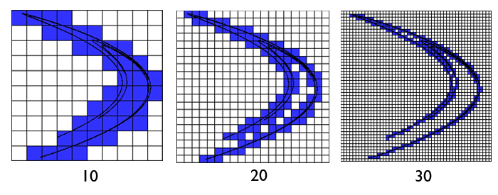
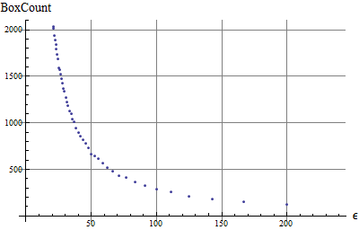
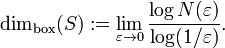

Calculadora de dimensión
Esta ventana le permite calcular la dimensión fractal de todos los fractales cargados en wxChaos. Más precisamente la dimensión de Minkowski-Bouligand, también conocida como dimensión de conteo de cajas. Se pueden usar los fractales pre-implementados y también los que se encuentran en los scripts de usuario. El rango del conteo de cajas se puede seleccionar utilizando una función o introducirse por una lista. Para más información vea el manual de usuario.
En pocas palabras la dimensión de conteo de cajas es una medida de como cambia el fractal conforme cambia le escala de medida.

En
este tipo de conteo la imagen se divide en secciones de tamaño
epsilon y luego se cuenta el número de recuadros requeridos
para abarcar todo el fractal. Se pueden tomar muestras sucesivas con
diferente tamaño de epsilon y esto dará resultados como
este.

Donde
la dimensión fractal quedará definida por:
